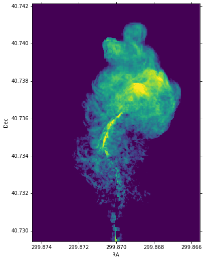

Synthetic Images from simulated data¶
Authors¶
Yi-Hao Chen, Sebastian Heinz, Kelle Cruz, Stephanie T. Douglas
Learning Goals¶
Assign WCS astrometry to an image using
astropy.wcsConstruct a PSF using
astropy.modeling.modelConvolve raw data with PSF using
astropy.convolutionCalculate polarization fraction and angle from Stokes I, Q, U data
Overplot quivers on the image
Keywords¶
modeling, convolution, coordinates, WCS, FITS, radio astronomy, matplotlib, colorbar
Summary¶
In this tutorial, we will:
1. Load and examine the FITS file
2. Set up astrometry coordinates
3. Prepare a Point Spread Function (PSF)
5. Convolve Stokes Q and U images
6. Calculate polarization angle and fraction for quiver plot
In[1]:
from astropy.utils.data import download_file
from astropy.io import fits
from astropy import units as u
from astropy.coordinates import SkyCoord
from astropy.wcs import WCS
from astropy.convolution import Gaussian2DKernel
from astropy.modeling.models import Lorentz1D
from astropy.convolution import convolve_fft
import matplotlib.pyplot as plt
import numpy as np
%matplotlib inline
1. Load and examine the FITS file¶
Here we begin with a 2-dimensional data that were stored in FITS format from some simulations. We have Stokes I, Q, and U maps. We we’ll first load a FITS file and examine the header.
In[2]:
file_i = download_file(
'http://data.astropy.org/tutorials/synthetic-images/synchrotron_i_lobe_0700_150MHz_sm.fits',
cache=True)
hdulist = fits.open(file_i)
hdulist.info()
hdu = hdulist['NN_EMISSIVITY_I_LOBE_150.0MHZ']
hdu.header
Out[2]:
Filename: /home/circleci/.astropy/cache/download/py3/c0ef4c0e064fc23aef784f93082d8b9a
No. Name Ver Type Cards Dimensions Format
0 PRIMARY 1 PrimaryHDU 4 ()
1 NN_EMISSIVITY_I_LOBE_150.0MHZ 1 ImageHDU 23 (1024, 1452) float64
XTENSION= 'IMAGE ' / Image extension
BITPIX = -64 / array data type
NAXIS = 2 / number of array dimensions
NAXIS1 = 1024
NAXIS2 = 1452
PCOUNT = 0 / number of parameters
GCOUNT = 1 / number of groups
EXTNAME = 'NN_EMISSIVITY_I_LOBE_150.0MHZ' / extension name
BTYPE = 'nn_emissivity_i_lobe_150.0MHz'
BUNIT = 'Jy/arcsec**2'
WCSAXES = 2
CRPIX1 = 512.0
CRPIX2 = 726.0
CDELT1 = 9.42382812499999E+19
CDELT2 = 9.42382812499999E+19
CUNIT1 = 'cm '
CUNIT2 = 'cm '
CTYPE1 = 'LINEAR '
CTYPE2 = 'LINEAR '
CRVAL1 = 0.0
CRVAL2 = 0.0
LATPOLE = 90.0
WCSNAME = 'yt '
We can see this FITS file, which was created in yt, has x and y coordinate in physical units (cm). We want to convert it into sky coordinates. Before we proceed, let’s find out the range of the data and plot a histogram.
In[3]:
print(hdu.data.max())
print(hdu.data.min())
np.seterr(divide='ignore') #suppress the warnings raised by taking log10 of data with zeros
plt.hist(np.log10(hdu.data.flatten()), range=(-3, 2), bins=100);
Out[3]:
129.7177858088622
0.0
Once we know the range of the data, we can do a visualization with the
proper range (vmin and vmax).
In[4]:
fig = plt.figure(figsize=(6,12))
fig.add_subplot(111)
# We plot it in log-scale and add a small number to avoid nan values.
plt.imshow(np.log10(hdu.data+1E-3), vmin=-1, vmax=1, origin='lower')
Out[4]:
<matplotlib.image.AxesImage at 0x7f69dff43c10>
2. Set up astrometry coordinates¶
From the header, we know that the x and y axes are in centimeter. However, in an observation we usually have RA and Dec. To convert physical units to sky coordinates, we will need to make some assumptions about where the object is located, i.e. the distance to the object and the central RA and Dec.
In[5]:
# distance to the object
dist_obj = 200*u.Mpc
# We have the RA in hh:mm:ss and DEC in dd:mm:ss format.
# We will use Skycoord to convert them into degrees later.
ra_obj = '19h59m28.3566s'
dec_obj = '+40d44m02.096s'
Here we convert the pixel scale from cm to degree by dividing the distance to the object.
In[6]:
cdelt1 = ((hdu.header['CDELT1']*u.cm/dist_obj.to('cm'))*u.rad).to('deg')
cdelt2 = ((hdu.header['CDELT2']*u.cm/dist_obj.to('cm'))*u.rad).to('deg')
print(cdelt1, cdelt2)
Out[6]:
8.749222239908287e-06 deg 8.749222239908287e-06 deg
Use astropy.wcs.WCS to prepare a FITS header.
In[7]:
w = WCS(naxis=2)
# reference pixel coordinate
w.wcs.crpix = [hdu.data.shape[0]/2,hdu.data.shape[1]/2]
# sizes of the pixel in degrees
w.wcs.cdelt = [-cdelt1.base, cdelt2.base]
# converting ra and dec into degrees
c = SkyCoord(ra_obj, dec_obj)
w.wcs.crval = [c.ra.deg, c.dec.deg]
# the units of the axes are in degrees
w.wcs.cunit = ['deg', 'deg']
Now we can convert the WCS coordinate into header and update the hdu.
In[8]:
wcs_header = w.to_header()
hdu.header.update(wcs_header)
Let’s take a look at the header. CDELT1, CDELT2, CUNIT1,
CUNIT2, CRVAL1, and CRVAL2 are in sky coordinates now.
In[9]:
hdu.header
Out[9]:
XTENSION= 'IMAGE ' / Image extension
BITPIX = -64 / array data type
NAXIS = 2 / number of array dimensions
NAXIS1 = 1024
NAXIS2 = 1452
PCOUNT = 0 / number of parameters
GCOUNT = 1 / number of groups
EXTNAME = 'NN_EMISSIVITY_I_LOBE_150.0MHZ' / extension name
BTYPE = 'nn_emissivity_i_lobe_150.0MHz'
BUNIT = 'Jy/arcsec**2'
WCSAXES = 2 / Number of coordinate axes
CRPIX1 = 726.0 / Pixel coordinate of reference point
CRPIX2 = 512.0 / Pixel coordinate of reference point
CDELT1 = -8.7492222399083E-06 / [deg] Coordinate increment at reference point
CDELT2 = 8.7492222399083E-06 / [deg] Coordinate increment at reference point
CUNIT1 = 'deg ' / Units of coordinate increment and value
CUNIT2 = 'deg ' / Units of coordinate increment and value
CTYPE1 = 'LINEAR '
CTYPE2 = 'LINEAR '
CRVAL1 = 299.8681525 / [deg] Coordinate value at reference point
CRVAL2 = 40.733915555556 / [deg] Coordinate value at reference point
LATPOLE = 90.0 / [deg] Native latitude of celestial pole
WCSNAME = 'yt '
In[10]:
wcs = WCS(hdu.header)
fig = plt.figure(figsize=(6,12))
fig.add_subplot(111, projection=wcs)
plt.imshow(np.log10(hdu.data+1e-3), vmin=-1, vmax=1, origin='lower')
plt.xlabel('RA')
plt.ylabel('Dec')
Out[10]:
Now we have the sky coordinate for the image!
3. Prepare a Point Spread Function (PSF)¶
Simple PSFs are included in astropy.convolution.kernel. We’ll use
astropy.convolution.Gaussian2DKernel here. First we need to set the
telescope resolution. For a 2D Gaussian, we can calculate sigma in
pixels by using our pixel scale keyword cdelt2 from above.
In[11]:
# assume our telescope has 1 arcsecond resolution
telescope_resolution = 1*u.arcsecond
# calculate the sigma in pixels.
# since cdelt is in degrees, we use _.to('deg')
sigma = telescope_resolution.to('deg')/cdelt2
In[12]:
# By default, the Gaussian kernel will go to 4 sigma
# in each direction
psf = Gaussian2DKernel(sigma)
# let's take a look:
plt.imshow(psf.array.value)
Out[12]:
<matplotlib.image.AxesImage at 0x7f69ddc55490>

3.a How to do this without astropy kernels¶
Maybe your PSF is more complicated. Here’s an alternative way to do this, using a 2D Lorentzian
In[13]:
# set FWHM and psf grid
telescope_resolution = 1*u.arcsecond
gamma = telescope_resolution.to('deg')/cdelt2
x_grid = np.outer(np.linspace(-gamma*4,gamma*4,int(8*gamma)),np.ones(int(8*gamma)))
r_grid = np.sqrt(x_grid**2 + np.transpose(x_grid**2))
lorentzian = Lorentz1D(fwhm=2*gamma)
# extrude a 2D azimuthally symmetric PSF
lorentzian_psf = lorentzian(r_grid)
# normalization
lorentzian_psf /= np.sum(lorentzian_psf)
# let's take a look again:
plt.imshow(lorentzian_psf.value, interpolation='none')
Out[13]:
<matplotlib.image.AxesImage at 0x7f69ddc40450>
4. Convolve image with PSF¶
Here we use astropy.convolution.convolve_fft to convolve image. This
routine uses fourier transform for faster calculation. Especially since
our data is \(2^n\) sized, which makes it particually fast. Using a
fft, however, causes boundary effects. We’ll need to specify how we want
to handle the boundary. Here we choose to “wrap” the data, which means
making the data periodic.
In[14]:
convolved_image = convolve_fft(hdu.data, psf, boundary='wrap')
In[15]:
# Put a psf at the corner of the image
delta_x_psf=100 # number of pixels from the edges
xmin, xmax = -psf.shape[1]-delta_x_psf, -delta_x_psf
ymin, ymax = delta_x_psf, delta_x_psf+psf.shape[0]
convolved_image[xmin:xmax, ymin:ymax] = psf.array/psf.array.max()*10
Now let’s take a look at the convolved image.
In[16]:
wcs = WCS(hdu.header)
fig = plt.figure(figsize=(8,12))
i_plot = fig.add_subplot(111, projection=wcs)
plt.imshow(np.log10(convolved_image+1e-3), vmin=-1, vmax=1.0, origin='lower')#, cmap=plt.cm.viridis)
plt.xlabel('RA')
plt.ylabel('Dec')
plt.colorbar()
Out[16]:
<matplotlib.colorbar.Colorbar at 0x7f69ddbfdfd0>
5. Convolve Stokes Q and U images¶
In[17]:
hdulist.info()
Out[17]:
Filename: /home/circleci/.astropy/cache/download/py3/c0ef4c0e064fc23aef784f93082d8b9a
No. Name Ver Type Cards Dimensions Format
0 PRIMARY 1 PrimaryHDU 4 ()
1 NN_EMISSIVITY_I_LOBE_150.0MHZ 1 ImageHDU 23 (1024, 1452) float64
In[18]:
file_q = download_file(
'http://data.astropy.org/tutorials/synthetic-images/synchrotron_q_lobe_0700_150MHz_sm.fits',
cache=True)
hdulist = fits.open(file_q)
hdu_q = hdulist['NN_EMISSIVITY_Q_LOBE_150.0MHZ']
file_u = download_file(
'http://data.astropy.org/tutorials/synthetic-images/synchrotron_u_lobe_0700_150MHz_sm.fits',
cache=True)
hdulist = fits.open(file_u)
hdu_u = hdulist['NN_EMISSIVITY_U_LOBE_150.0MHZ']
# Update the header with the wcs_header we created earlier
hdu_q.header.update(wcs_header)
hdu_u.header.update(wcs_header)
# Convolve the images with the the psf
convolved_image_q = convolve_fft(hdu_q.data, psf, boundary='wrap')
convolved_image_u = convolve_fft(hdu_u.data, psf, boundary='wrap')
Let’s plot the Q and U images.
In[19]:
wcs = WCS(hdu.header)
fig = plt.figure(figsize=(16,12))
fig.add_subplot(121, projection=wcs)
plt.imshow(convolved_image_q, cmap='seismic', vmin=-0.5, vmax=0.5, origin='lower')#, cmap=plt.cm.viridis)
plt.xlabel('RA')
plt.ylabel('Dec')
plt.colorbar()
fig.add_subplot(122, projection=wcs)
plt.imshow(convolved_image_u, cmap='seismic', vmin=-0.5, vmax=0.5, origin='lower')#, cmap=plt.cm.viridis)
plt.xlabel('RA')
plt.ylabel('Dec')
plt.colorbar()
Out[19]:
<matplotlib.colorbar.Colorbar at 0x7f69dc2f8e10>
6. Calculate polarization angle and fraction for quiver plot¶
Note that rotating Stokes Q and I maps requires changing signs of both. Here we assume that the Stokes q and u maps were calculated defining the y/declination axis as vertical, such that Q is positive for polarization vectors along the x/right-ascention axis.
In[20]:
# First, we plot the background image
fig = plt.figure(figsize=(8,16))
i_plot = fig.add_subplot(111, projection=wcs)
i_plot.imshow(np.log10(convolved_image+1e-3), vmin=-1, vmax=1, origin='lower')
# ranges of the axis
xx0, xx1 = i_plot.get_xlim()
yy0, yy1 = i_plot.get_ylim()
# binning factor
factor = [64, 66]
# re-binned number of points in each axis
nx_new = convolved_image.shape[1] // factor[0]
ny_new = convolved_image.shape[0] // factor[1]
# These are the positions of the quivers
X,Y = np.meshgrid(np.linspace(xx0,xx1,nx_new,endpoint=True),
np.linspace(yy0,yy1,ny_new,endpoint=True))
# bin the data
I_bin = convolved_image.reshape(nx_new, factor[0], ny_new, factor[1]).sum(3).sum(1)
Q_bin = convolved_image_q.reshape(nx_new, factor[0], ny_new, factor[1]).sum(3).sum(1)
U_bin = convolved_image_u.reshape(nx_new, factor[0], ny_new, factor[1]).sum(3).sum(1)
# polarization angle
psi = 0.5*np.arctan2(U_bin, Q_bin)
# polarization fraction
frac = np.sqrt(Q_bin**2+U_bin**2)/I_bin
# mask for low signal area
mask = I_bin < 0.1
frac[mask] = 0
psi[mask] = 0
pixX = frac*np.cos(psi) # X-vector
pixY = frac*np.sin(psi) # Y-vector
# keyword arguments for quiverplots
quiveropts = dict(headlength=0, headwidth=1, pivot='middle')
i_plot.quiver(X, Y, pixX, pixY, scale=8, **quiveropts)
Out[20]:
<matplotlib.quiver.Quiver at 0x7f69ddc935d0>